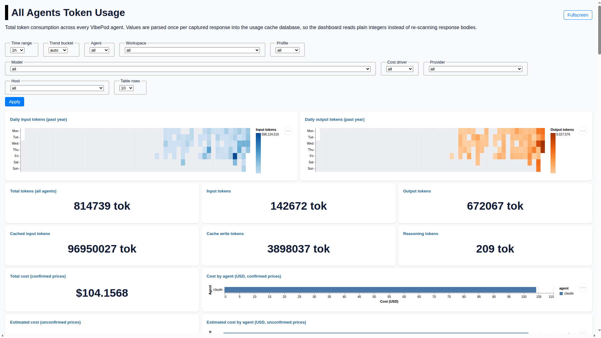

Every call, priced
The dashboard has counted tokens for a while. It now also prices them, using
published rates from
pydantic/genai-prices
rather than a table kept by hand. Calls are priced once, when they are captured,
against their own timestamp — so old totals stay correct after a provider changes
a price — and the rates ship with the image, so nothing is fetched over the
network.

python -m pip install --upgrade vibepod
vp logs startTwo figures stay separate. Confirmed cost is calls to a host that names its billing provider. Estimated cost is calls to a host that fronts several vendors — a Copilot endpoint never says who billed the call, so the provider is read off the model name. Both use published rates, but a guess never lands in the actual-dollars number.
Where the money went
One table ranks every dimension — agent, workspace, profile, session, model, provider, host — by share of spend. Beside it: cost over time against the previous window of the same length, average, median and p95 cost per call, the most expensive calls, outliers costing 3× the median for their own model, and models billed at more than one rate.
Three of those breakdowns are new, and they are where this release's three repositories meet:
- Workspace — the directory the agent ran in, so spend maps to projects.
- Profile — the credential profile the call ran under, which also decides which hosts that agent may reach. The proxy now writes it on every request, the CLI writes it on every session.
- Session — a single
vp run, which is usually the question behind a surprising number.
Calls that resolve to none of them are counted as unknown instead
of dropped, so the breakdowns still add up to the total.
What is not priced
Coverage and quality tables report how each call got its price — an exact
rate, an alias match (claude-opus-4-5-20260101 at the
claude-opus-4-5 rate), an inferred provider, or nothing — plus the
token volume nothing could price and what it would have cost at the window's
confirmed rate. A missing rate is worth fixing upstream in the
genai-prices provider files.
As that project says itself, these prices are a best-effort estimate, not a
bill.
Upgrading
Nothing to migrate by hand. vp logs start pulls the new dashboard
image, vp run and vp task pull the new proxy, and both
databases update their schema in place — earlier captures keep working, they just
carry no profile.
Release details
- Sessions record the credential profile they ran under (
logs.dbgains aprofilecolumn, migrated in place). - Ships with vibepod-proxy 0.5.0: an indexed
profilecolumn onhttp_requests, written for CONNECT and plain HTTP alike. - Ships with vibepod-datasette 0.6.0: per-call cost from
pydantic/genai-prices, reported as confirmed and estimated figures per agent and over time. - Cost drivers, cost per call, most expensive calls, per-model outliers, mid-window rate changes, and pricing coverage and quality tables.
- Token usage attributed per workspace, per profile, and per session, with unresolved rows visible as
unknown. - Dashboard filters gain
2hand4hranges, a model filter, and a table-rows selector; the deprecated Claude Code and Codex token dashboards were removed. - Cached input tokens are no longer double charged on providers that already count them inside the input total.
- Documented the DeepSeek Harness with a screenshot, and bumped the package version to
0.22.0.